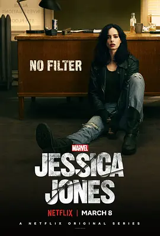

7.8
杰西卡·琼斯 第二季
Jessica Jones Season 2
2018
美国
评分 7.8
导演:
安娜·福斯特 / 明基·斯皮罗 / 梅尔西·阿尔马斯 / 黛博拉·周 / 米利塞特·谢尔顿
演员:
克里斯滕·里特 / 瑞切尔·泰勒 / 艾卡·达维尔 / 凯瑞-安·莫斯 / 珍妮特·麦克蒂尔
类型:
剧情,动作,犯罪
剧情简介
在经历了震撼人心的第一季后，杰西卡·琼斯回到了那座永不眠的纽约，试图在名声与阴影之间寻找新的立足点。她曾击败了那个让人噩梦连连的控制者，然而胜利并未带来真正的解脱——人们将她视为超能力杀手，曾经的伤痕仍旧在心底裂开。新季伊始，杰西卡接下看似普通的案件：一所神秘实验机构 IGH（Institute for Genetic Health）再次浮出水面，牵扯出她少年取得力量的源头，也让她不得不面对曾经逃避的家庭秘密。她在破译线索的同时，陷入酒精与愤怒的循环，镜头中她像一个受伤的猎人，仰头啜饮、在夜色中奔走、用力掰开锁链却难以掩饰震颤。与此同时，特瑞什·沃克试图跳出“杰西卡配角”身份的阴影，她开始挑战自己，也挑战杰西卡，两人原本携手破案，渐渐在情感、愤恨、救赎边缘擦出火花。而马尔科姆·杜卡斯则在帮杰西卡清理残局的同时，悄悄战斗着自己的复苏之路。当真相层层累积，杰西卡发现最大的敌人并非鲜血淋漓的暴徒，而是被掩埋在记忆里、依旧跳动的“我是谁”的答案。这是一场黑夜中的自我追逐。街头霓虹、酒馆低语、仪器滴答——每一帧都在问：“你还剩几条路？”当她拿起放大镜、抽出子弹、凝视镜中倒影，她明白：要么继续活在别人的阴影里，要么自己成为光。夜色深处，她踉跄，却从未停止移动。